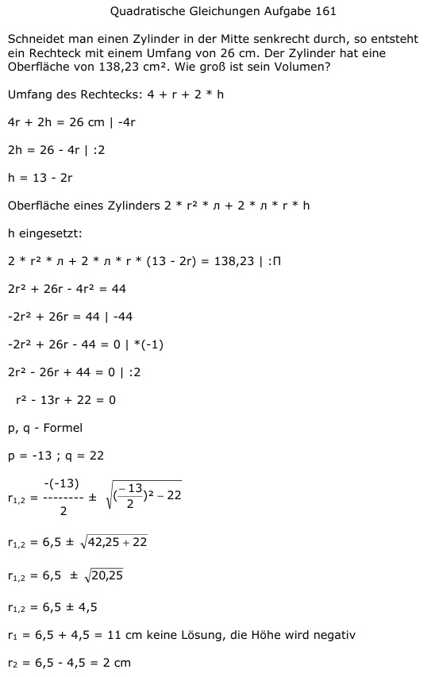

Aufgabe 161 Schneidet man einen Zylinder in der Mitte senkrecht durch, so entsteht ein Rechteck mit einem Umfang von 26 cm. Der Zylinder hat eine Oberfläche von 138,23 cm2. Wie groß ist sein Volumen? Umfang des Rechtecks: 4 + r + 2 * h 4r + 2h = 26 cm | -4r 2h = 26 - 4r | :2 h = 13 - 2r Oberfläche eines Zylinders O = 2 * r2 * л + 2 * л * r * h h eingesetzt: 2 * r2 * л + 2 * л * r * (13 - 2r) = 138,23 |:П 2r2 + 26r - 4r2 = 44 -2r2 + 26r = 44 | -44 -2r2 + 26r - 44 = 0 |*(-1) 2r2 - 26r + 44 = 0 |:2 r2 - 13r + 22 = 0 p, q - Formel p = -13 ; q = 22  r1,2 = 6,5 ± 4,5 r1 = 6,5 + 4,5 = 11 cm keine Lösung, die Höhe wird negativ r2 = 6,5 - 4,5 = 2 cm h = 13 cm - 2 * 2 cm = 9 cm V = r2 * л * h = 22 cm2 * л * 9 cm = 113 cm3